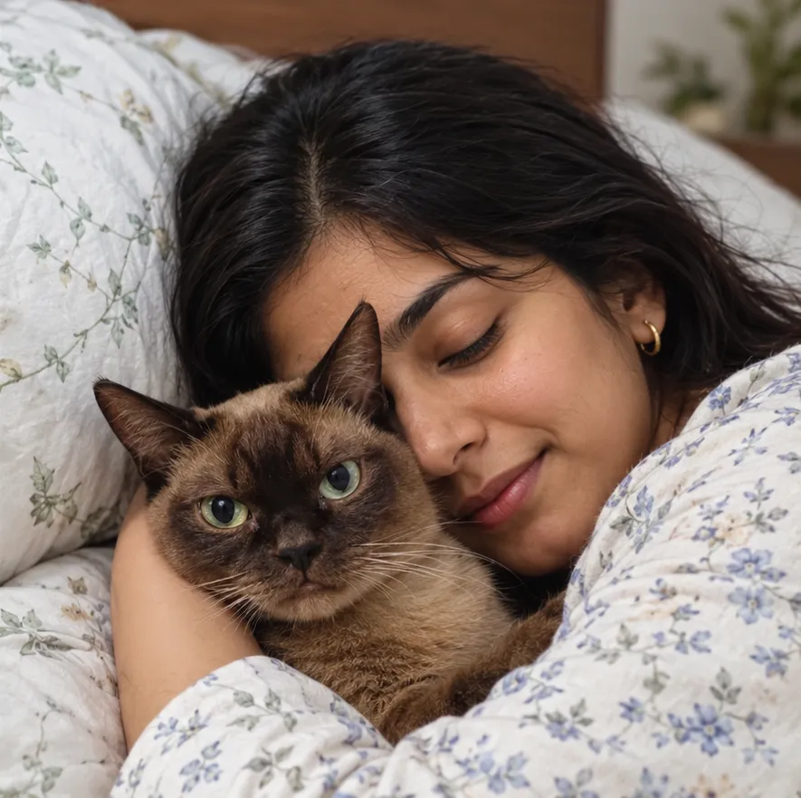
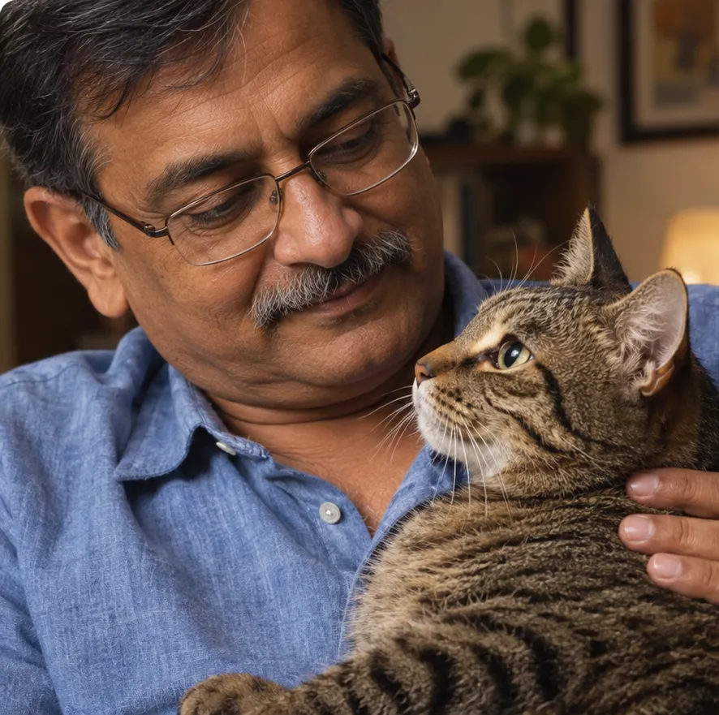

4.8
rating from cat parents across India.
Unsure if you need a visit to the clinic? A feline vet will call you and help you decide in minutes.

One short form. A feline vet calls you in about 15 to 30 minutes.
Free. No card or account. Private, no spam.
rating from cat parents across India.
Get quality vet care from the comfort of your home
usually, for a feline vet to call you.
What cat parents say
What are you seeing?
Tap the one that sounds closest. Some signs mean a clinic visit, and your vet will tell you straight away.

How it works
Why a check first
Tap your cat's age.
Who you will speak to
Feline Internal Medicine
20 years of experience
Feline Internal Medicine
8 years of experience
Felica vs a clinic visit
A 2-minute check, then a feline vet calls you, usually within 15 to 30 minutes.
No. The consultation is free. You only share your cat's age, the concern and your phone number.
No. It helps you decide if your cat needs a clinic visit, and what to do in the meantime. If an exam is needed, the vet will say so.
If your cat has warning signs, go to a clinic now. If a vet cannot help remotely, they will tell you on the call.
Yes. A feline vet calls the number you share, usually within 15 to 30 minutes.
The check takes about 2 minutes. The call time depends on your cat's concern.
The vet asks about your cat, gives advice and next steps, and tells you if a clinic visit is a good idea.
Yes. Very young kittens and older cats can get unwell quickly, so if you are worried, go to a clinic.
Takes 2 minutes · Private, no spam · Advice from a feline vet
Pick a date in the next 2 weeks and a time. Monday to Saturday, 10 AM to 7 PM IST.
Free. No card or account. We will call you at the time you pick.